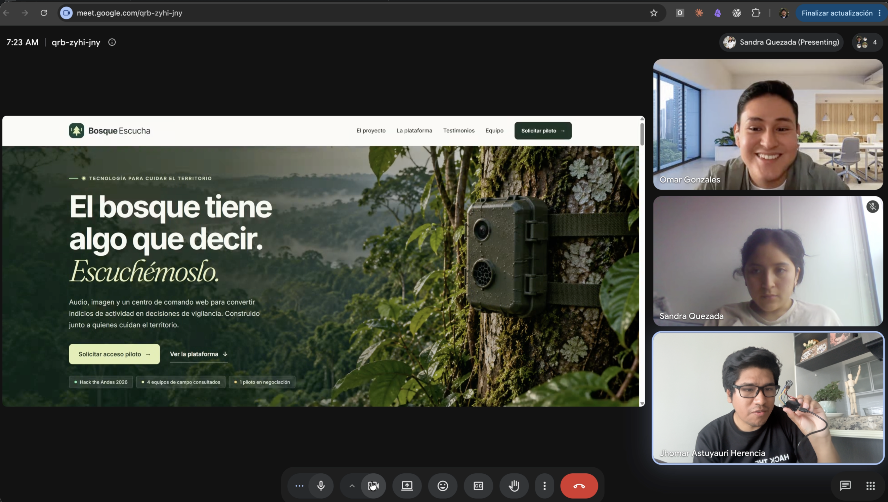

01 / Conversación con Omar
Omar Gonzales Huisa
Founder & CEO de YakuSmart
Interés en el problema y la solución, con preguntas sobre la comunicación satelital y cómo el dispositivo enfrentaría las condiciones de la naturaleza en el día a día.
Síntesis de la conversación compartida por el equipo.